# Displaying at least 50 columns
pd.set_option('display.max_columns',50)1. Context
The next exercise is related to the development of a machine learning modeling that have as a goal to classify if an order is being delivered correctly or not.
The dataset provided is from a ficticious company that provides the service of delivery from stores as grocery shops, pharmacies and more to their clients. The company have as a SLA the commitment to delivery successfully all the orders that they have, if happens otherwise the company is penalized since they need to assume the losses of the order that have being handled poorly.
The company has a general understanding on the problems that lead to have unsusscesful order. For example:
- The product requested has gone stockout and the partner did not report it on time.
- The high demand creates that there are some lack of delivery vehicles in certain hours.
- The products arrive to the clients in a badly state.
- The route to deliver the order presents bottlenecks (stores, distance and more) and the order is not handled on time.
Now, the company knows from where it comes the problems. However, wants to automatize the problem of recognizing orders that are in danger to being wrong handled. For it, it is displayed a dataset of orders, the characteristics that are being picked in real time about the order and the result of it.
In the article, it is going to be explained the process to provide of an algorithm to classify and recognize the orders in real time and issue aids to avoid the losses of wrong orders.
Firstly, the next libraries are going be imported in the lab. + pandas and numpy to manage the numerical data + seaborn and matplotlib are oriented to create statistical graphs
# Importing libraries
import pandas as pd
import numpy as np
import seaborn as sns
import matplotlib.pyplot as plt#/ @hidden_cell
delivery = pd.read_csv('.//ml_dlv.csv')#/ @hidden_cell
trans1 = {'Super' : 'Supermarket', 'Floristeria':'E-commerce', 'Express':'Convenient Store', 'Especializada': 'Special Convenient Store', 'Moda':'E-commerce',
'Libreria':'E-commerce', 'Tecnologia':'E-commerce', 'Hogar':'E-commerce', 'Farmacia':'Pharmacy', 'Mascotas':'Pet Shop',
'Smoking shop':'E-commerce', 'Belleza':'E-commerce', 'Regalos':'E-commerce', 'Licores':'Licours Shop', 'Deportes':'E-commerce',
'Bebes y niños':'E-commerce', 'Jugueteria':'E-commerce', 'Sex shop':'E-commerce', 'TurboX':'E-commerce', 'Papeleria':'E-commerce',
'Outlet':'E-commerce'}
delivery['store_category'] = delivery['store_category'].map(trans1)#/ @hidden_cell
delivery.drop(['date'], axis= 1,inplace= True)Data
Now is going to be presented the data about a company that has as goal to deliver different products to the clients in the countries that it operates. In this table there is a lot of data about the operations logistic of the company. Many od thiese data comes is real time from several APIs scrateched from applications of the partners, the clients, and the couriers. Which now in this dataset have been tangled.
| Field | Concept |
|---|---|
| country | There are going to three countries in the dataset |
| district_name | Name of the village in the city |
| date | day when the order was commanded |
| weekday | name of the day when the order was commanded |
| user_total_orders | number of previous orders that the client had ordered before |
| completed orders user | Percentage of the orders that actually were well delivered to the client |
| payment_method | Defines the way in which the client pays for the order |
| order_value | value of the order |
| item_count | number of elements that the basket of the order have |
| city | location of the order |
| partner | Store or brand that provided the items requested by the client |
| picking_time | Lead time that the clerk takes to gather all the items of the order. |
| cashier_time | Time take by the cashier to generate the bill |
| requesting_transport_time | Time that the clerk takes to ask for a courier to pick up the basket. |
| vehicle_type | Type of vehicle that the courier have |
| store_category | Macro classification of the partner |
| out_of_stock | Number of elements that were reported to be out of stock in the store. |
| order_wrong | Indicades if the order was sucessfully delivered or not |
| tag_cancel | Indicades if the order was cancelled or not. |
| distance_km | Total number of km that the delivery had from the partner to the client |
| use_credit | Indicades if the order was payed with some promotion code |
| hora | Have the hour in which the order was issued |
| polygon_size | Defines the km of coverage of the partner |
| cashback | Provides the total amount of promotion code value in possess of the client |
delivery.head(3)| country | district_name | weekday | user_total_orders | % completed orders user | payment_method | order_value | item_count | city | partner | picking_time | cashier_time | requesting_transport_time | vehicle_type | store_category | out_of_stock | order_wrong | tag_cancel | distance_km | use_credit | hora | polygon_size | cashback | |
|---|---|---|---|---|---|---|---|---|---|---|---|---|---|---|---|---|---|---|---|---|---|---|---|
| 0 | Llaqta_1 | MA_1 | Friday | 111 | 95.50 % | revol_pay | 25.407407 | 2.0 | Maule | Botillería Echenique | NaN | 14187.0 | NaN | Bicycle | Licours Shop | 0 | False | False | 2.0 | NaN | 23 | NaN | NaN |
| 1 | Llaqta_1 | MA_2 | Tuesday | 4 | 50.00 % | cc-N/A | 43.049383 | 1.0 | Maule | SOLOROSASYALGOMAS | 2.0 | 0.0 | NaN | Motorcycle | E-commerce | 0 | True | True | 3.0 | NaN | 0 | NaN | NaN |
| 2 | Llaqta_1 | MA_3 | Tuesday | 208 | 99.04 % | cc-credit | 119.438889 | 11.0 | Maule | Jumbo | 8.0 | 12.0 | 1.0 | Motorcycle | Supermarket | 0 | False | False | 4.0 | NaN | 12 | NaN | NaN |
2. Data cleaning and feature engineering
Now that the data has been presented, the data team know beforehand that the the information provided can have some inconsistencies that comes from the system technology components. For example:
- Redundant data
- duplicate data
- missing values
- missleading data
In this section, we are going to cover some aspects to prepare the data to actually handle and initialize the machine learning modeling.
Data cleaning
The first check is to know which fields have null values. From which is noticed that: fields as item_count, the time related fields (for example picking time) and tag fields as polygon_size have a lot missing values. The most heavily cases are the next
- cashback: Have an 87% of missing values. It is justified since not all the clients have assigned an amount of money gifted by the company.
- use_credit: Also 87% of missing values. Also related to the assumption of being assigned a gift amount of money to the client.
- requesting_transport_time: This field needs to be reviewed, since every order needs to be assigned a value.
# checking the percentage of missing values in the dataset
missing_percentage = (delivery.isna().sum() / len(delivery)) * 100
missing_percentage_sorted = missing_percentage.sort_values(ascending=False)
print(missing_percentage_sorted)cashback 87.281588
use_credit 87.281588
requesting_transport_time 48.504376
picking_time 17.872143
cashier_time 1.909205
vehicle_type 1.593408
store_category 0.670065
item_count 0.638005
polygon_size 0.362284
distance_km 0.003206
out_of_stock 0.000000
hora 0.000000
weekday 0.000000
tag_cancel 0.000000
order_wrong 0.000000
payment_method 0.000000
order_value 0.000000
user_total_orders 0.000000
district_name 0.000000
% completed orders user 0.000000
partner 0.000000
city 0.000000
country 0.000000
dtype: float64To handle this issues the next tasks are going to be executed: + For the categorical fields with critical missing values the mode is going to be assigned. + For the numerical fields with critical missing values the average is going to be put. Unless there are some business rules that explains the data. + For minor missing values fields, the rows with no data are going to be removed.
# The field use_credit is a categorical field has several missing values because it is related to the fact
#that the user do not used credit since this is the case, the blank values are filled with *False*
delivery.fillna({'use_credit': False},inplace=True)
# Also, the numerical fields related to the lead time of the operation of order delivery have a lot of blank rows.
#This can happen because the order didnt met the step or there was some internal issue in the technical side of the apps used
# It is resolved to put the standard value of zero in all the cases.
delivery.fillna({'picking_time': 0, 'cashier_time': 0, 'requesting_transport_time':0, 'cashback':0}, inplace=True)
# Remove missing values in the low missing blank impact fields. Since there might be problems in the tech side but can
# ignored for the modeling
delivery.dropna(subset=['vehicle_type','polygon_size','item_count','distance_km','store_category'],inplace=True)With the data cleaned of blank rows now it is time to check the validity of the data
missing_percentage = (delivery.isna().sum() / len(delivery)) * 100
missing_percentage_sorted = missing_percentage.sort_values(ascending=False)
print(missing_percentage_sorted)country 0.0
requesting_transport_time 0.0
polygon_size 0.0
hora 0.0
use_credit 0.0
distance_km 0.0
tag_cancel 0.0
order_wrong 0.0
out_of_stock 0.0
store_category 0.0
vehicle_type 0.0
cashier_time 0.0
district_name 0.0
picking_time 0.0
partner 0.0
city 0.0
item_count 0.0
order_value 0.0
payment_method 0.0
% completed orders user 0.0
user_total_orders 0.0
weekday 0.0
cashback 0.0
dtype: float64The field ‘% completed orders user’ is suposly to store percentage values. However, when checked the field it is being stored as a string.
delivery['% completed orders user'].info()<class 'pandas.core.series.Series'>
Index: 60416 entries, 31 to 62381
Series name: % completed orders user
Non-Null Count Dtype
-------------- -----
60416 non-null object
dtypes: object(1)
memory usage: 944.0+ KBFor it, it is proposed a rearange on the field to convert it to float field.
# Removing % label
# first eliminate the string '%'
delivery['% completed orders user']=delivery['% completed orders user'].str.replace('%',' ')
# define the field now as a float column
delivery['% completed orders user']=delivery['% completed orders user'].astype('float')
# divide it by 100 to have the percentage value
delivery['% completed orders user']=delivery['% completed orders user']/100Now it will be checke the numercial values and see if the values provided are consitent and has a logic on it. For it it is going to be separated the dataset between numercial and categorical fields.
# The fields defined as boolean and objects has string data in it. These are categorical data
df_cat = delivery.select_dtypes(include=['object','bool'])
# The rest of fields contain numerical values
df_quan = delivery.select_dtypes(exclude=['object','bool'])Now we plot some histogram graphs to check how the data is distributed
for col in df_quan.columns:
fig, ax = plt.subplots(1, 2, figsize=(10, 4))
# Histogram
sns.histplot(df_quan[col], kde=True, bins=20, ax=ax[0])
ax[0].set_title(f'Histogram for {col}')
ax[0].set_xlabel(col)
ax[0].set_ylabel('Frequency')
# Box plot
sns.boxplot(x=df_quan[col], ax=ax[1])
ax[1].set_title(f'Boxplot for {col}')
ax[1].set_xlabel(col)
plt.tight_layout()
plt.show()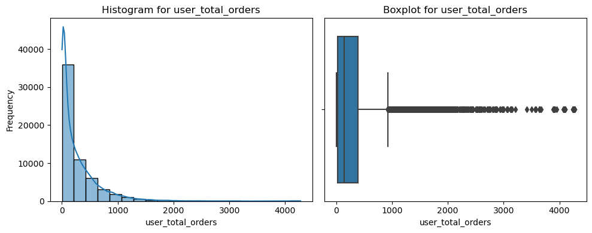
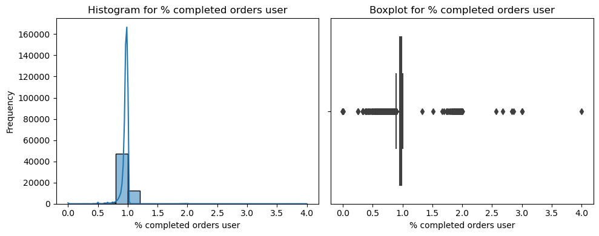
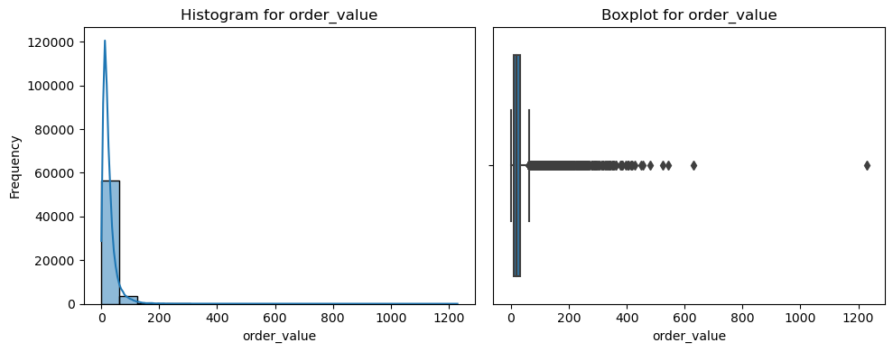
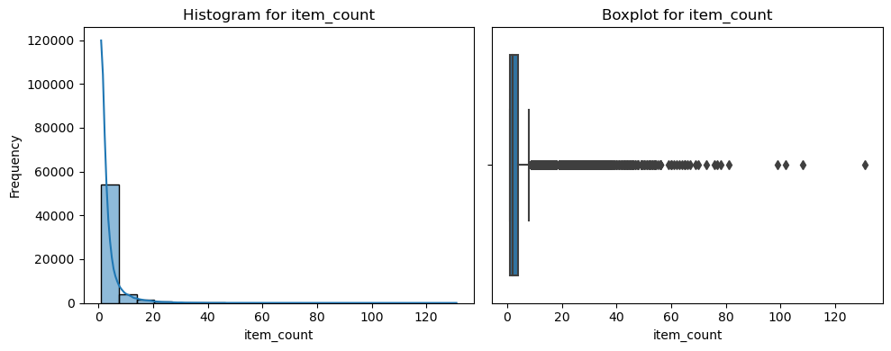
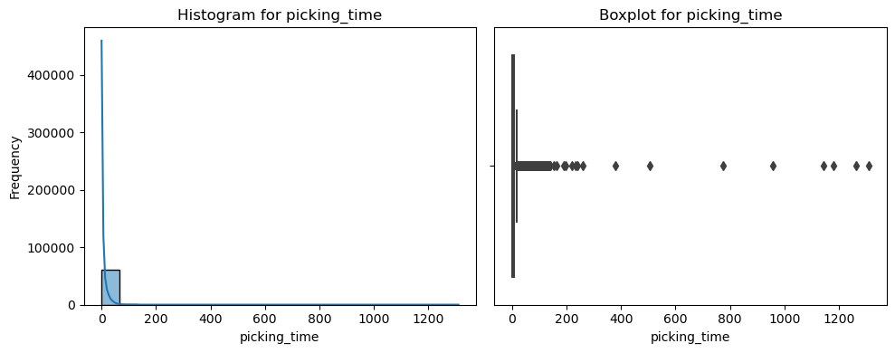
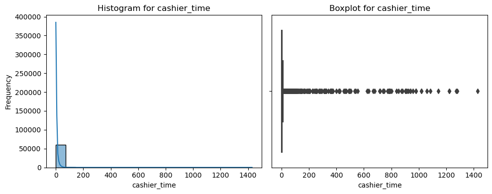
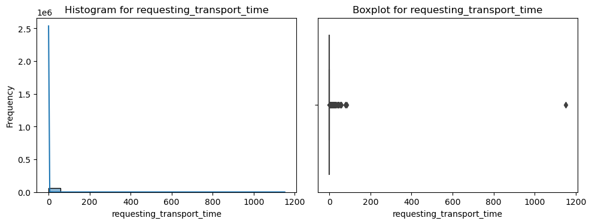
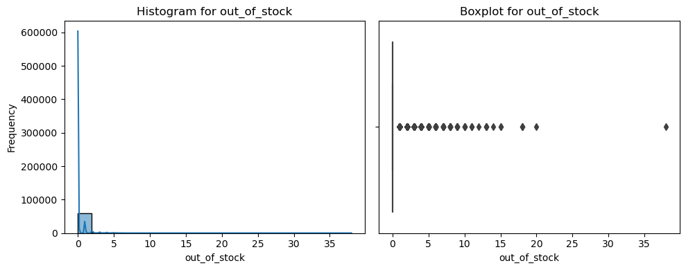
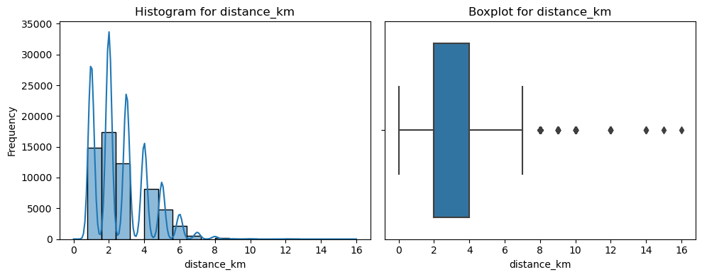
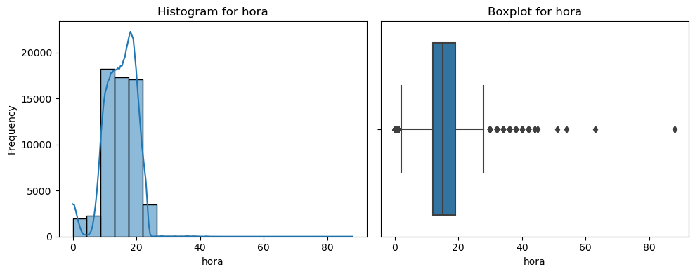
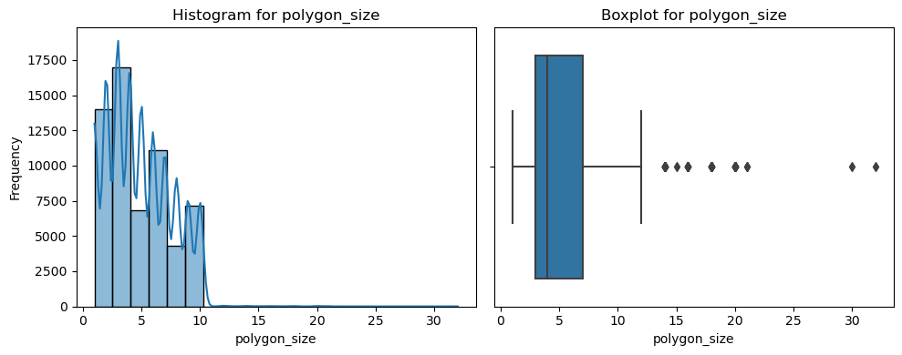
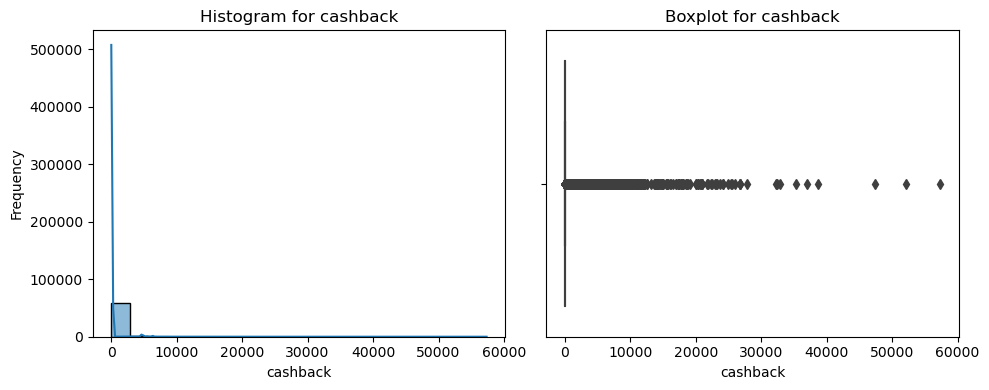
From the graphs depicted some incongruences are being found:
- % completed orders: This field should only have values between 0 and 1 since it is a percentage. It is needed to eliminate the rare cases.
- picking time, cashier_time, requesting_transport_time: There are some high values in the field. this column has values in minutes. Many of them indicades days to process, which makes no sense.
- hora: The field has a range between 0 and 24. There are some ramdom values in it
- polygon size: Also random values are inside as 30 km, which makes a range bigger than the radious of a general city.
# The issues recognized are being defined and filtered out
misspercentage = delivery['% completed orders user'] > 1
# eliminate the rows that have more than one day to be do. By business rule, this cases shouldnt happen
days_1 = delivery['picking_time'] > 1440
days_2 = delivery['cashier_time'] > 1440
days_3 = delivery['requesting_transport_time'] > 1440
#out of range 1 to 24
nohour = delivery['picking_time'] > 24
# set a maximum of polygon size as 10 km (extreme cases). Above it, are random cases
size = delivery['polygon_size'] > 10
# also, the stockout counter should not surpass the item counter
noitem = delivery['item_count']<delivery['out_of_stock']
delivery_filtered = delivery[~(misspercentage | days_1 | days_2 | days_3 | nohour | size | noitem)]
delivery_filtered.head(5)| country | district_name | weekday | user_total_orders | % completed orders user | payment_method | order_value | item_count | city | partner | picking_time | cashier_time | requesting_transport_time | vehicle_type | store_category | out_of_stock | order_wrong | tag_cancel | distance_km | use_credit | hora | polygon_size | cashback | |
|---|---|---|---|---|---|---|---|---|---|---|---|---|---|---|---|---|---|---|---|---|---|---|---|
| 31 | Llaqta_1 | MA_3 | Monday | 198 | 0.9848 | cc-credit | 39.111111 | 4.0 | Maule | DBS Beauty | 7.0 | 0.0 | 0.0 | Bicycle | E-commerce | 0 | False | False | 3.0 | False | 12 | 6.0 | 0.0 |
| 33 | Llaqta_1 | MA_7 | Monday | 10 | 1.0000 | cc-N/A | 44.037037 | 14.0 | Maule | Lider | 18.0 | 12.0 | 0.0 | Car | Supermarket | 0 | True | False | 3.0 | False | 13 | 5.0 | 0.0 |
| 34 | Llaqta_1 | MA_6 | Monday | 1362 | 0.9369 | cc-N/A | 18.938272 | 2.0 | Maule | Bigos | 0.0 | 714.0 | 0.0 | Motorcycle | Pet Shop | 0 | False | False | 3.0 | False | 14 | 6.0 | 0.0 |
| 35 | Llaqta_1 | MA_16 | Monday | 1343 | 0.9628 | cc-N/A | 38.160494 | 1.0 | Maule | Amplifica | 0.0 | 39.0 | 0.0 | Motorcycle | E-commerce | 0 | False | False | 5.0 | False | 14 | 9.0 | 0.0 |
| 36 | Llaqta_1 | MA_6 | Monday | 306 | 0.9869 | cc-N/A | 20.851852 | 1.0 | Maule | Bigos | 0.0 | 1273.0 | 0.0 | Motorcycle | Pet Shop | 0 | False | False | 4.0 | False | 14 | 6.0 | 0.0 |
Creating complementary fields
If we check the dataset, there can be more fields that is aggregated from the dataset. This in the future could help in the accuracy of the modeling and may be key features in the algorithm.
- incomplete orders: This field calculate the historic number of orders that has not been issued to client.(created in merge of total order and % completed orders
- average_item_value: It will calculate the mean price per piece in the order.
- total_time: field that have the sum of all the time fields
- weight_pick: % of the time dedicated to picking
- weight_cashier:% of the time dedicated to cashier process
- weight_trans:% of the time dedicated to transport the goods
- weight_stockout: ratio of items that were stockout out of the basket.
delivery['average_item_value'] = delivery['order_value']/delivery['item_count']
delivery['incomp_order'] = (1-delivery['% completed orders user'])*delivery['user_total_orders']
delivery['total_time'] = delivery['picking_time']+delivery['cashier_time']+delivery['requesting_transport_time']
delivery['weight_pick'] = delivery['picking_time']/delivery['total_time']
delivery['weight_cashier'] = delivery['cashier_time']/delivery['total_time']
delivery['weight_trans'] = delivery['requesting_transport_time']/delivery['total_time']
delivery['weight_stockout'] = delivery['out_of_stock']/delivery['item_count']delivery.head(2)| country | district_name | weekday | user_total_orders | % completed orders user | payment_method | order_value | item_count | city | partner | picking_time | cashier_time | requesting_transport_time | vehicle_type | store_category | out_of_stock | order_wrong | tag_cancel | distance_km | use_credit | hora | polygon_size | cashback | average_item_value | incomp_order | total_time | weight_pick | weight_cashier | weight_trans | weight_stockout | |
|---|---|---|---|---|---|---|---|---|---|---|---|---|---|---|---|---|---|---|---|---|---|---|---|---|---|---|---|---|---|---|
| 31 | Llaqta_1 | MA_3 | Monday | 198 | 0.9848 | cc-credit | 39.111111 | 4.0 | Maule | DBS Beauty | 7.0 | 0.0 | 0.0 | Bicycle | E-commerce | 0 | False | False | 3.0 | False | 12 | 6.0 | 0.0 | 9.777778 | 3.0096 | 7.0 | 1.0 | 0.0 | 0.0 | 0.0 |
| 33 | Llaqta_1 | MA_7 | Monday | 10 | 1.0000 | cc-N/A | 44.037037 | 14.0 | Maule | Lider | 18.0 | 12.0 | 0.0 | Car | Supermarket | 0 | True | False | 3.0 | False | 13 | 5.0 | 0.0 | 3.145503 | 0.0000 | 30.0 | 0.6 | 0.4 | 0.0 | 0.0 |
# Create a heatmap
plt.figure(figsize=(10, 8))
df_quan_corr = df_quan.corr(method = 'spearman' )
ax = sns.heatmap(df_quan_corr, annot=True, cmap='coolwarm', center=0,fmt='.2g',xticklabels='auto', yticklabels='auto',linewidth=.8,cbar_kws={"shrink": .8})
ax.tick_params(axis='both', which='both', labelsize=8)
plt.title("Correlation Heatmap")
plt.show()
# Create a pairplot
sns.pairplot(df_quan)C:\Users\equipo\anaconda3\Lib\site-packages\seaborn\axisgrid.py:118: UserWarning: The figure layout has changed to tight
self._figure.tight_layout(*args, **kwargs)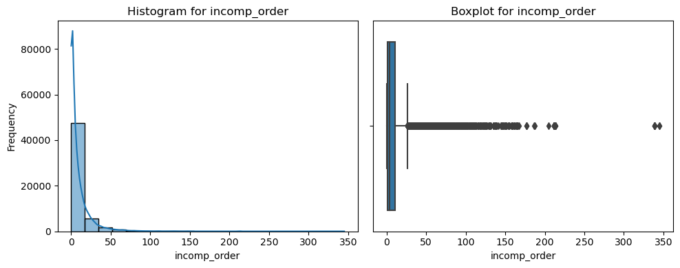
df_quan.columns#Removing outliers for : % completed orders user, picking_time, cashier_time, t_06, polygon size, rapi_amount
columns = ['t04_picking_time', 't05_cashier_time',
't06_requesting_rt_time', 'polygon_size', 'rappi_amount']
Q1 = df[columns].quantile(0.25)
Q3 = df[columns].quantile(0.75)
IQR = Q3 - Q1
lower_bound = Q1 - 1.5 * IQR
upper_bound = Q3 + 1.5 * IQR
outliers = pd.DataFrame()
for col in columns:
condition = (df[col] < lower_bound[col]) | (df[col] > upper_bound[col])
outliers = pd.concat([outliers, df[condition]], ignore_index=True)2. Exploratory Data Analysis (EDA) (univariate / bivariate analysis)
#chi_squared for categorical
from scipy.stats import chi2_contingency
chi_squared_results = pd.DataFrame(columns=['Variable 1', 'Variable 2', 'Chi-Squared', 'P-Value'])
for var1 in df_cat:
for var2 in df_cat:
if var1 != var2:
#if var2 =='bad_order':
contingency_table = pd.crosstab(df[var1], df[var2])
chi2, p, _, _ = chi2_contingency(contingency_table)
new_row = pd.DataFrame({'Variable 1': [var1], 'Variable 2': [var2], 'Chi-Squared': [chi2], 'P-Value': [p]})
chi_squared_results = pd.concat([chi_squared_results, new_row], ignore_index=True)
chi_squared_results#Checking for independance between our outcome bad_order and the categorical variables#chi_squared for categorical
from scipy.stats import chi2_contingency
chi_squared_results = pd.DataFrame(columns=['Variable', 'Chi-Squared', 'P-Value'])
outcome_variable = 'bad_order'
for var in df_cat:
if var != outcome_variable:
contingency_table = pd.crosstab(df[outcome_variable], df[var])
chi2, p, _, _ = chi2_contingency(contingency_table)
new_row = pd.DataFrame({'Variable': var, 'Chi-Squared': [chi2], 'P-Value': [p]})
chi_squared_results = pd.concat([chi_squared_results, new_row], ignore_index=True)
if p < 0.05:
print(f"There is a significant association between {outcome_variable} and {var} (p-value = {p:.2f})")
else:
print(f"There is no significant association between {outcome_variable} and {var} (p-value = {p:.2f})")
#H0 there is no relathionship between the variables
chi_squared_results#Perfoming ANOVA TEST for mixed categorical and numerical valuesimport statsmodels.api as sm
from statsmodels.formula.api import ols
from statsmodels.stats.anova import anova_lm
# List of numerical variables for the ANOVA tests
df_cuantitative = ['% completed orders user', 'order_value_usd', 'item_count', 't04_picking_time', 't05_cashier_time', 't06_requesting_rt_time', 'out_of_stock', 'distance_km', 'hora']
# Perform ANOVA for numerical variables
for num_var in df_cuantitative:
formula = f'{num_var} ~ C(bad_order)'
try:
model = ols(formula, data=df).fit()
anova_table = anova_lm(model)
print(f"ANOVA table for {num_var} and bad_order:")
print(anova_table)
p_value = anova_table['PR(>F)'][0]
if p_value < 0.05:
print(f"There is a significant difference between the means of the groups defined by bad_order for {num_var} (p-value = {p_value:.2f})")
else:
print(f"There is no difference between the means of k groups")
print("=" * 40)
except Exception as e:
print(f"Error for {num_var} and bad_order: {str(e)}")
4. Machine Learning
# Feature engineering
df_quanFor this part we are going to start put the data in a standarization and onehot encoding so the data is ready to be inserted in the modeling. For it, we are going to use the Pipeline method
from sklearn.base import BaseEstimator, TransformerMixin
class VariableSelector(BaseEstimator, TransformerMixin):
def __init__(self,attribute_names):
self.attribute_names = attribute_names
def fit(self, X , y=None):
return self
def transform(self, X):
return X[self.attribute_names]columns_quan = list(df_quan.columns)columns_quan#quantitative
from sklearn.pipeline import Pipeline
from sklearn.preprocessing import StandardScaler
quanti_pipeline = Pipeline(
[
('selector', VariableSelector(columns_quan)),
('std_scaler', StandardScaler())
]
)
#It is being checked in the case of the categorical variables, which values can be apprved for a OHE method or label encoding
df_cat_oh = ['country','payment_method','city','vehicle_type','store_category','use_credit']
df_cat_le = ['district_name','brand_group']
from sklearn.preprocessing import OneHotEncoder as OHE
cuali_pipeline_ohe = Pipeline(
[
('selector',VariableSelector(df_cat_oh)),
('OHE_columns',OHE(sparse=False))
]
)from sklearn.preprocessing import OrdinalEncoder as OE
cuali_pipeline_le =Pipeline(
[
('selector',VariableSelector(df_cat_le)),
('LE_columns', OE())
]
)from sklearn.pipeline import FeatureUnion
full_pipeline =FeatureUnion(
transformer_list=[
('num_pipeline', quanti_pipeline),
('ohe_pipeline',cuali_pipeline_ohe),
('le_pipeline',cuali_pipeline_le)
]
)Once that is defined the Pipeline, to do the adjustements on the data. It is going to be retrieved from the main dataset the y to be predicted
x_df = full_pipeline.fit_transform(df)X = x_df
y = df['bad_order']from sklearn.model_selection import train_test_split
X_train,X_test,y_train,y_test = train_test_split(X,y, test_size=0.2,random_state=42,shuffle=True,stratify = y)Now that we splited our data, we will apply 3 models on our categorical outcome (Logistic regression, Classification Tree, Random Forest)
- LOGISTICS REGRESSION
#Logistic Regression Model Fitting
from sklearn.linear_model import LogisticRegression
logreg = LogisticRegression(penalty = None, solver = 'newton-cholesky')
logreg.fit(X_train, y_train)
#Predicting the test set results
lr_pred = logreg.predict(X_test)#Calculating the accuracy
print('Accuracy of Logistic Regression classifier on test set: {:.2f}'.format(logreg.score(X_test, y_test)))#Checking crossvalidated performance
from sklearn.model_selection import cross_val_score
cv_score = cross_val_score(logreg, X_test, y_test)
print(f"average cross validated score : {np.mean(cv_score)}")#Logistic Regression model performance with Confusion Matrix
from sklearn.metrics import confusion_matrix, classification_report, ConfusionMatrixDisplay
confusion_matrix_lr = confusion_matrix(y_test, lr_pred, labels= logreg.classes_)
ConfusionMatrixDisplay(confusion_matrix_lr, display_labels = logreg.classes_).plot()
print(classification_report(y_test,lr_pred))from sklearn.metrics import accuracy_score,precision_score,recall_score, f1_score,roc_auc_score,cohen_kappa_score,roc_curve
accuracy_lr = accuracy_score(y_test, lr_pred)
precision_lr = precision_score(y_test, lr_pred)
sensitivity_lr = recall_score(y_test, lr_pred)
f1_lr = f1_score(y_test, lr_pred)
#ROC Curve
lr_pred_prob= logreg.predict_proba(X_test)
fpr, tpr, thresholds = roc_curve(y_test, lr_pred_prob[:,1])
lr_roc_auc = roc_auc_score(y_test, lr_pred_prob[:,1])
result_lr = pd.DataFrame([['Log. reg.',accuracy_lr, precision_lr, sensitivity_lr,f1_lr,lr_roc_auc]], columns=('model','accuracy','precision','sensitivity','f1','roc'))
result_lrplt.figure(figsize=(8, 6))
plt.plot(fpr, tpr, color='blue', lw=2, label=' Logit Regression - ROC curve (area = {:.2f})'.format(lr_roc_auc))
plt.plot([0, 1], [0, 1], color='black', lw=2, linestyle='--')
plt.xlim([0.0, 1])
plt.ylim([0.0, 1])
plt.xlabel('False Positive Rate')
plt.ylabel('True Positive Rate')
plt.legend(loc='lower center')
plt.show()- Decision Tree
#Classification Tree Model Fitting
from sklearn.tree import DecisionTreeClassifier
# Initializing Decision Tree classifer object
clf = DecisionTreeClassifier()
# Train Decision Tree Classifer
clf.fit(X_train,y_train)
#Predicting on the test set
clf_pred = clf.predict(X_test)#Calculating the model accuracy, how often is the classifier correct ?
from sklearn.metrics import accuracy_score
print("Accuracy Decision Tree Classifier: {:.2f}".format(accuracy_score(y_test, clf_pred)))#Classification Tree Model performance
from sklearn.metrics import confusion_matrix, classification_report, ConfusionMatrixDisplay
confusion_matrix_clf = confusion_matrix(y_test, clf_pred, labels = clf.classes_)
ConfusionMatrixDisplay(confusion_matrix_clf, display_labels= clf.classes_).plot()
print(classification_report(y_test, clf_pred))from sklearn.tree import export_graphviz
export_graphviz(
clf,
out_file=("order_simple.dot"),
feature_names=None,
class_names=None,
filled=True,
)!dot -Tpng hitters_simple.dot -o hitters_simple.png#from IPython.display import Image
#Image("order_simple.png")accuracy_clf = accuracy_score(y_test, clf_pred)
precision_clf = precision_score(y_test, clf_pred)
sensitivity_clf = recall_score(y_test, clf_pred)
f1_clf = f1_score(y_test, clf_pred)
#ROC Curve
clf_pred_prob= clf.predict_proba(X_test)
fpr, tpr, thresholds = roc_curve(y_test, clf_pred_prob[:,1])
clf_roc_auc = roc_auc_score(y_test, clf_pred_prob[:,1])
result_clf = pd.DataFrame([['decision tree',accuracy_clf, precision_clf, sensitivity_clf,f1_clf,clf_roc_auc]], columns=('model','accuracy','precision','sensitivity','f1','roc'))
result_clfplt.figure(figsize=(8, 6))
plt.plot(fpr, tpr, color='blue', lw=2, label='Tree Dec. -ROC curve (area = {:.2f})'.format(clf_roc_auc))
plt.plot([0, 1], [0, 1], color='black', lw=2, linestyle='--')
plt.xlim([0.0, 1])
plt.ylim([0.0, 1])
plt.xlabel('False Positive Rate')
plt.ylabel('True Positive Rate')
plt.legend(loc='lower center')
plt.show()- Random Forest
#Random Forest Model Fitting
from sklearn.ensemble import RandomForestClassifier
# Initializing Random Forest Classifer object
rf = RandomForestClassifier()
# Train Random Forest Classifer
rf.fit(X_train, y_train)
#Predicting on the test set
rf_pred = rf.predict(X_test)#Calculating Random Forest model accuracy
accuracy_rf = accuracy_score(y_test, rf_pred)
print("Accuracy Random Forest Classifier: {:.2f}".format(accuracy_rf))#Random Forest Classifier model performance
confusion_matrix_rf = confusion_matrix(y_test, rf_pred, labels = rf.classes_)
ConfusionMatrixDisplay(confusion_matrix_rf, display_labels= rf.classes_).plot()
print(classification_report(y_test, rf_pred))accuracy_rf = accuracy_score(y_test, rf_pred)
precision_rf = precision_score(y_test, rf_pred)
sensitivity_rf = recall_score(y_test, rf_pred)
f1_rf = f1_score(y_test, rf_pred)
#ROC Curve
rf_pred_prob= rf.predict_proba(X_test)
fpr, tpr, thresholds = roc_curve(y_test, rf_pred_prob[:,1])
rf_roc_auc = roc_auc_score(y_test, rf_pred_prob[:,1])
result_rf = pd.DataFrame([['random forest',accuracy_rf, precision_rf, sensitivity_rf,f1_rf,rf_roc_auc]], columns=('model','accuracy','precision','sensitivity','f1','roc'))
result_rfAfter checking model performance accuracy (counts of correct classification) we can assume that our best model is Random Forest Classifier with 0.93% of correctly predicted predictions
plt.figure(figsize=(8, 6))
plt.plot(fpr, tpr, color='blue', lw=2, label='Rand. forest -ROC curve (area = {:.2f})'.format(rf_roc_auc))
plt.plot([0, 1], [0, 1], color='black', lw=2, linestyle='--')
plt.xlim([0.0, 1])
plt.ylim([0.0, 1])
plt.xlabel('False Positive Rate')
plt.ylabel('True Positive Rate')
plt.legend(loc='lower center')
plt.show()resultados = pd.concat([result_lr, result_clf,result_rf], axis=0)
resultadosResults:
Metrics
Overall the accuracy between all the models seems to be high (between 86 and 92%) which meant that the models have been a great deal into predicting if the order was labeled as a good one or bad one.
Precision: However, for this exercise it is most interesting to predict only the bad orders, to which this metric is most important. As it can be revised, the random forest model is the one with the best result out of the three. Which means that of the total predicted true bad orders, the model have an 86% of good prediction
Sensitivity: However, all the models had a bad ratio in this metric. This metric indicates that the of all the True orders labeled as bad order, only ;in the best case; was predicted 30% of this cases. To make the model more fit, it will be used the methods for reduce the overfitting of the models.
Tuning model
estimators = list(range(2, 50, 5))
sens_rf_num_estimators = []
accu_rf_num_estimators = []
for n in estimators:
rf = RandomForestClassifier(n_estimators=n, random_state=42)
rf.fit(X_train, y_train)
y_pred = rf.predict(X_test)
sensitivity_rf = recall_score(y_test, rf_pred)
accuracy_rf = accuracy_score(y_test, rf_pred)
sens_rf_num_estimators.append(sensitivity_rf)
accu_rf_num_estimators.append(accuracy_rf)# Plotting the results
plt.figure(figsize=(10, 6))
plt.plot(estimators, sens_rf_num_estimators, marker='o', linestyle='-', color='b')
plt.plot(estimators,accu_rf_num_estimators, marker='x', linestyle='-', color='r')
plt.title('Sensitivity vs. Number of Estimators')
plt.xlabel('Number of Estimators')
plt.ylabel('%')
plt.grid(True)
plt.show()
train_scores = []
valid_scores = []
leaves = list(range(2,30))
for leaf in leaves :
dtr = RandomForestClassifier(min_samples_leaf = leaf)
dtr.fit(X_train, y_train)
train_scores.append(dtr.score(X_train, y_train))
valid_scores.append(dtr.score(X_test, y_test))
plt.figure(figsize=(10,8))
plt.plot(leaves, train_scores)
plt.plot(leaves, valid_scores)
plt.xlabel("minimum samples per leaf")
plt.ylabel("score values")
plt.legend(["training scores", "validation scores"])
plt.show()train_scores = []
valid_scores = []
depths = list(range(2,40))
for depth in depths :
dtr = RandomForestClassifier(max_depth = depth)
dtr.fit(X_train, y_train)
train_scores.append(dtr.score(X_train, y_train))
valid_scores.append(dtr.score(X_test, y_test))
plt.figure(figsize=(10,8))
plt.plot(depths, train_scores)
plt.plot(depths, valid_scores)
plt.xlabel("maximum depth")
plt.ylabel("score values")
plt.legend(["training scores", "validation scores"])
plt.show()- GridSearchCV
from sklearn.model_selection import GridSearchCV
params = {'max_depth': list(range(2, 15)), 'min_samples_leaf': list(range(2,20))}
grid_search_cv = GridSearchCV(RandomForestClassifier(),
params,
verbose=1,
cv=3,
n_jobs=-1)
grid_search_cv.fit(X_train, y_train)
best_tree_model = grid_search_cv.best_estimator_
best_tree_modelbest_tree_model.fit(X_train,y_train)
best_tree_model.score(X_test,y_test)rfo_pred = best_tree_model.predict(X_test)from sklearn.tree import export_graphviz
tree_to_visualize = best_tree_model.estimators_[0]
from sklearn.tree import export_graphviz
import subprocess
export_graphviz(
tree_to_visualize,
out_file="optimal_tree.dot",
feature_names=None,
class_names=None,
filled=True
)
subprocess.call(['dot', '-Tpng', 'optimal_tree.dot', '-o', 'optimal_tree.png'])from IPython.display import Image
Image("optimal_tree.png")accuracy_rfo = accuracy_score(y_test, rfo_pred)
precision_rfo = precision_score(y_test, rfo_pred)
sensitivity_rfo = recall_score(y_test, rfo_pred)
f1_rfo = f1_score(y_test, rfo_pred)
#ROC Curve
rfo_pred_prob= clf.predict_proba(X_test)
fpr, tpr, thresholds = roc_curve(y_test, rfo_pred_prob[:,1])
rfo_roc_auc = roc_auc_score(y_test, rfo_pred_prob[:,1])
result_rfo = pd.DataFrame([['optimal random forest',accuracy_rfo, precision_rfo, sensitivity_rfo,f1_rfo,rfo_roc_auc]], columns=('model','accuracy','precision','sensitivity','f1','roc'))
result_rfoplt.figure(figsize=(8, 6))
plt.plot(fpr, tpr, color='blue', lw=2, label='Rand. forest -ROC curve (area = {:.2f})'.format(rfo_roc_auc))
plt.plot([0, 1], [0, 1], color='black', lw=2, linestyle='--')
plt.xlim([0.0, 1])
plt.ylim([0.0, 1])
plt.xlabel('False Positive Rate')
plt.ylabel('True Positive Rate')
plt.legend(loc='lower center')
plt.show()Unsupervised Learning
'''Importing the needed libraries and getting a basic idea on the df_quant to see what we are looking at'''
try:
from fanalysis.pca import PCA
except:
!pip install fanalysis
from fanalysis.pca import PCA
display(df[df_quan].head(3))
display(df[df_quan].info())
D = df[df_quan]
p = D.shape[1]
n = D.shape[0]
D = df[df_quan]
X = D.values'''Step 1: Try PCA to reduce dimensionality'''
# instantiate acp object form PCA class
acp = PCA(std_unit=True,row_labels=D.index,col_labels=D.columns) #std_unit=True, doing standardized PCA)
# run PCA on X observed data
try:
acp.fit(X) # This will raise a ZeroDivisionError
except Exception as e:
display(f"An error occurred: {e}")'''Step 2: Trouble shooting the error, which may indicate that there are columns that are zero'''
D_corr = D.corr()
ax = sns.heatmap(D_corr, annot=True, cmap='coolwarm', center=0,fmt='.1g',xticklabels='auto', yticklabels='auto',linewidth=.8,cbar_kws={"shrink": .8})
ax.tick_params(axis='both', which='both', labelsize=8)
plt.title("Correlation Heatmap")
plt.show()'''
Step 3: Issue becomes clear that the 't06_requesting_rt_time' is the problematic one because apparently
after data cleaning, all the values we kept are zero, which makes sense given the value means the time it took for
a delivery personnel to be assigned to the order, which is expected to be swifty in any delivery app.
Solution here: get rid off such column and do it again
'''
display(D.columns[5])
D1 = D.drop(columns = [D.columns[5]])
X1 = D1.values
p1 = D1.shape[1]
n1 = D1.shape[0]
acp = PCA(std_unit=True,row_labels=D1.index,col_labels=D1.columns) #std_unit=True, doing standardized PCA)
acp.fit(X1) # This will raise a ZeroDivisionError
display(acp.col_labels)
display(acp.eig_) # each lamda k is in the first array, and then each lamda k divided by the sum of lamda k
#(proportion of variance explained by k),
# aka the variance explained by each component, is in the second row.
# The third row is the cumulative variance.
'''Looking at the cumulative variance, the most variable with the most variance only took 22%
of the total variance in the quantitative columns'''
display(acp.eig_.shape)'''Step 4: determining the threshold'''
# first the main plot
fig, ax = plt.subplots(nrows=1, ncols=2, figsize=(10,5))
ax[0].plot(range(1,p1+1),acp.eig_[0],".-")
ax[0].set_xlabel("Nb. of factors")
ax[0].set_ylabel("Eigenvalues")
ax[0].set_title("Scree Plot")
# add Kaiser's threshold line
ax[0].plot([1,p1+3],[1,1],"r--",linewidth=1)
# print explained variance plot
ax[1].plot(range(0,p1+1),np.append(0,acp.eig_[2]),".-")
ax[1].set_xlabel("Nb. of factors")
ax[1].set_ylabel("% of explained variance")
ax[1].set_title("Explained Variance")
'''According to the plot, I decided to choose 4 as the threshold'''# Applying Barlett's test of Sphericity
try:
from factor_analyzer.factor_analyzer import calculate_bartlett_sphericity
except:
!pip install factor_analyzer
from factor_analyzer.factor_analyzer import calculate_bartlett_sphericity
chi_square_value, p_value = calculate_bartlett_sphericity(X1)
print(chi_square_value, p_value)# Computing Karlis-Saporta-Spinaki threshold
# impor math package
import math
#seuil de Karlis-Saporta-Spinaki
kss = 1+2*math.sqrt((p1-1)/(n1-1))
print(f"Karlis-Saporta-Spinaki threshold: {kss:.3f}")# Broken sticks method
# threshold for the broken sticks
b = np.flip(np.cumsum(1/np.arange(p1,0,-1)))
print(f"thresholds for the broken sticks: {b}")
# plot eigenvalues
fig, ax = plt.subplots(figsize=(5,5))
ax.plot(range(1,p1+1),acp.eig_[0],".-")
ax.set_xlabel("Nb. if factors")
ax.set_ylabel("Eigenvalues")
plt.title("Eigenvalues and broken sticks thresholds")
# add broken sticks thresholds
ax.plot(range(1,p1+1),b,"r--",linewidth=1)
plt.show()'''Step 5: Variable representation'''
print(pd.DataFrame(acp.col_coord_[:,:4],index=D1.columns, columns=['F1','F2','F3','F4']))# Correlations circle
acp.correlation_circle(num_x_axis=1,num_y_axis=2, figsize=(5,5))
acp.correlation_circle(num_x_axis=3,num_y_axis=4, figsize=(5,5))
'''Interpretation of the two dimensions'''
'''Three variables have a quite negative correlation with Dim 1, which are item_count, picking_time
and cashier_time. This means the speed the store can get those orders ready, which, unsurprisingly, also partially
comes down to the size of the order. There is clearly a size effect in this dimension'''
'''Two variables have a quite negative correlation with Dim 2, which are distance_km and order_value_USD. This means
that whether the order is cheap and within a shorter distance, most likely being some everyday shopping needs versus
some more expensive order traveling a longer distance. This shows a shape effect while Dim 1 shows a size effect'''
'''Two variables have a quite strong positive correlation with Dim 3, namely 'hora' which means hour, meaning the
time in the day, and 'out_of_stock'. This indicates that this axis talks about a general time variation, since the
early an order is placed, the less likely that the specific item a customer wants would be sold out.'''
'''The fourth dimension has a very high correlation on '% completed orders user' which could just be interpreted as
that specific variable.'''# Cos² if the variables on the two first factors
print(pd.DataFrame(acp.col_cos2_[:,:4],index=D1.columns, columns=['F1','F2','F3','F4']))# Cumulated Cos² on the two first factors
print(pd.DataFrame(np.cumsum(acp.col_cos2_[:,:4],axis=1),index=D1.columns, columns=['F1','F2',"F3",'F4']))# Contributions of each variable on the two first factors (in %)
print(pd.DataFrame(acp.col_contrib_[:,:4],index=D1.columns, columns=['F1','F2',"F3",'F4']))# chart of the individuals
acp.mapping_row(num_x_axis=1,num_y_axis=2,figsize=(7,7))# chart of the individuals
acp.mapping_row(num_x_axis=3,num_y_axis=4,figsize=(7,7))
'''From this factor map, we can see clearly that if we use Dim 3 and Dim 4 as our x1 and x2 axis and plot the data
points, there is a CLEAR tendency that different clusters are formed likely due to the variance introduced by
different rows, aka different groups of the customers behaving differently'''# creating a new data frame with the row coordinates of F1, F2, F3 and F4
df_row_coord = pd.DataFrame(np.cumsum(acp.row_coord_[:,:4],axis=1),index=D1.index, columns=['F1','F2','F3',"F4"])
df_row_coord.head(5)mask = df_row_coord['F1'] == df_row_coord['F1'].min()
df_row_coord.loc[df_row_coord[mask].index, :]'''Clustering'''
'''Plotting them one axis by another first'''
sns.pairplot(df_row_coord)df_row_coord1 = df_row_coord.copy()
if df_row_coord1.shape[0] == y.shape[0]:
df_row_coord1['bad_order'] = y
sns.pairplot(df_row_coord1, hue='bad_order')display(df_row_coord.head(3))
display(df_row_coord1.head(3))
display(df_row_coord1['bad_order'].mean())'''clustering with K-Means'''
from sklearn.cluster import KMeans
X = df_row_coord.values
km = KMeans(n_clusters = 2, init = 'k-means++' , n_init = 10, max_iter = 300, random_state = 0, tol = 0.0001)
y_km = km.fit_predict(X)km.labels_
from collections import Counter
unique_counts = Counter(km.labels_)
display(unique_counts)#Added the clustering info to the dataframe, but it won't affect the original X since X was done in the front as
#X = df_row_coord.values
df_row_coord['Y_KMean'] = y_km
sns.pairplot(df_row_coord, hue='Y_KMean')from sklearn.cluster import DBSCAN
eps_list = [0.2, 0.5, 1, 2, 2.2, 2.5, 2.7, 3, 4, 5]
for eps_ in eps_list
DBSCAN_model = DBSCAN(eps = eps_, min_samples=5, metric='euclidean')
DBSCAN_model.fit_predict(X)
y_DBSCAN = DBSCAN_model.labels_
df_row_coord['Y_DBSCAN'] = y_DBSCAN
display(df_row_coord['Y_DBSCAN'].value_counts())
sns.pairplot(df_row_coord.drop(columns = ['Y_KMean']), hue='Y_DBSCAN')